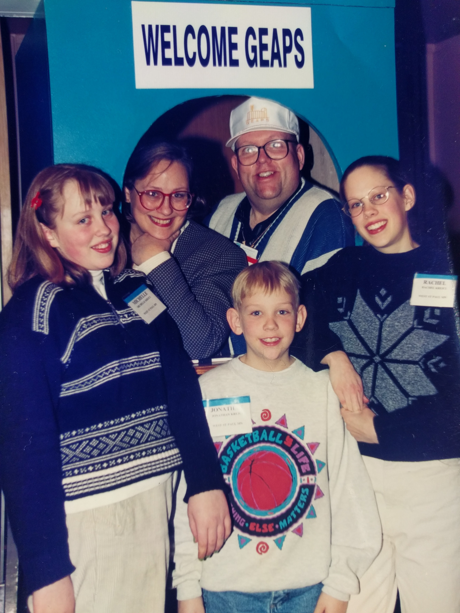

Everything is DevOps
DevOps and Drupal past, present, and future
Agenda
- Shared understanding of "DevOps"
- History of spread of DevOps outbreak
- Where it's going
What problem does DevOps solve?
"I need a website."
- everyone at some point
"I need lunch."
- everyone right now
A proud family business

From farm-to-table Drupal to industrial Drupal
A history
2010
Drupal is safe and scalable
"Having the public write code may seem like a security risk, but it’s just the opposite, experts inside and outside the government argued. Because programmers collaborate to find errors or opportunities to exploit Web code, the final product is therefore more secure."
- Associate Press
2011
Managing configuration and sorting out hosting
2012
performance and configuration
2013
drush and automation
2014
virtual local environments and builds
2015
continuous integration and continuous delivery
2016
Improved release cycle
DevOps submissins now account for nearly half of all of submissions to camps.
everything (and one) is DevOps now.
cannot control the pipeline
But you never know when you suddenly need to DevOps
Containers
because you can't take your laptop with you in the cloud.
Know why VMs are out, containers are in.
- Cheaper
- Less surface area
- Isolate components
- Faster deployments
Try this tutorial.
Cloud
because you've got too much to think about already
This presentation lives in "the cloud."
Monitoring
Manage your risk.